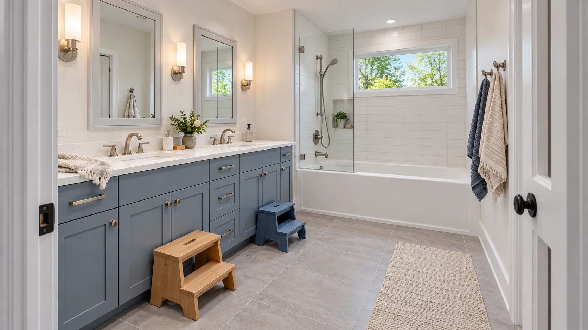

Tell us about your household
Kids, pets, working from home, and anyone who needs easy access. It all changes how we split up the work and where the crew comes and goes.
Remodel guide
Most of our clients stay in the house while we work. Here’s how we plan for that, so the remodel doesn’t take over your life.

Kids, pets, working from home, and anyone who needs easy access. It all changes how we split up the work and where the crew comes and goes.
If the kitchen is coming out, we’ll help you set up a temporary one, usually the fridge, a microwave and a folding table in the dining room, and we make sure you always have a working bathroom.
We put up dust walls and floor protection, agree on which door the crew uses, and clean up at the end of every workday.
You’ll have one project lead for questions. Any change gets written up with its cost and signed before we do it.
Common questions
Most of our clients do. We’ll talk through which rooms you’ll lose and for how long, and help you set up a temporary kitchen if you need one.
No. Common Ground plans the layout with you and helps you pick cabinets, tile and fixtures. Some jobs need drawings for the permit, and we take care of those.
It depends on the size of the room, whether walls or plumbing move, and the cabinets and finishes you choose. After the first visit we’ll give you a range, and the written proposal has the detailed price.
We do, and we schedule the inspections.
In older houses it happens: old wiring, a leaky drain, rot under the tub. We stop, show you what we found, and write up the fix and its cost before we go on.